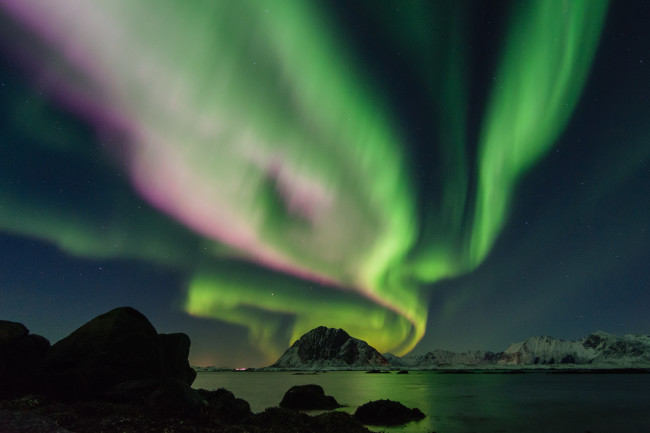

auroras
An aurora (plural: auroras or aurorae), sometimes referred to as polar lights (aurora polaris), northern lights (aurora borealis), or southern lights (aurora australis), is a natural light display in the Earth’s sky, predominantly seen in high-latitude regions (around the Arctic and Antarctic).
Auroras are the result of disturbances in the magnetosphere caused by solar wind. These disturbances are sometimes strong enough to alter the trajectories of charged particles in both solar wind and magnetospheric plasma. These particles, mainly electrons and protons, precipitate into the upper atmosphere (thermosphere/exosphere).
The resulting ionization and excitation of atmospheric constituents emit light of varying color and complexity. The form of the aurora, occurring within bands around both polar regions, is also dependent on the amount of acceleration imparted to the precipitating particles. Precipitating protons generally produce optical emissions as incident hydrogen atoms after gaining electrons from the atmosphere. Proton auroras are usually observed at lower latitudes.